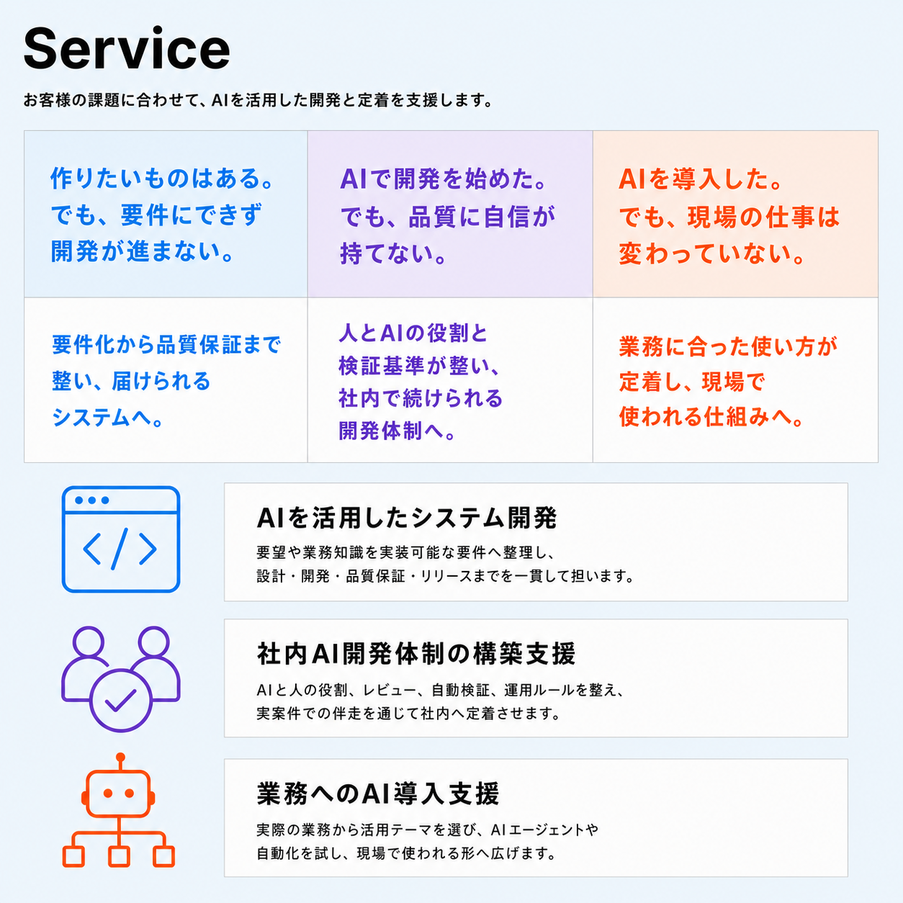
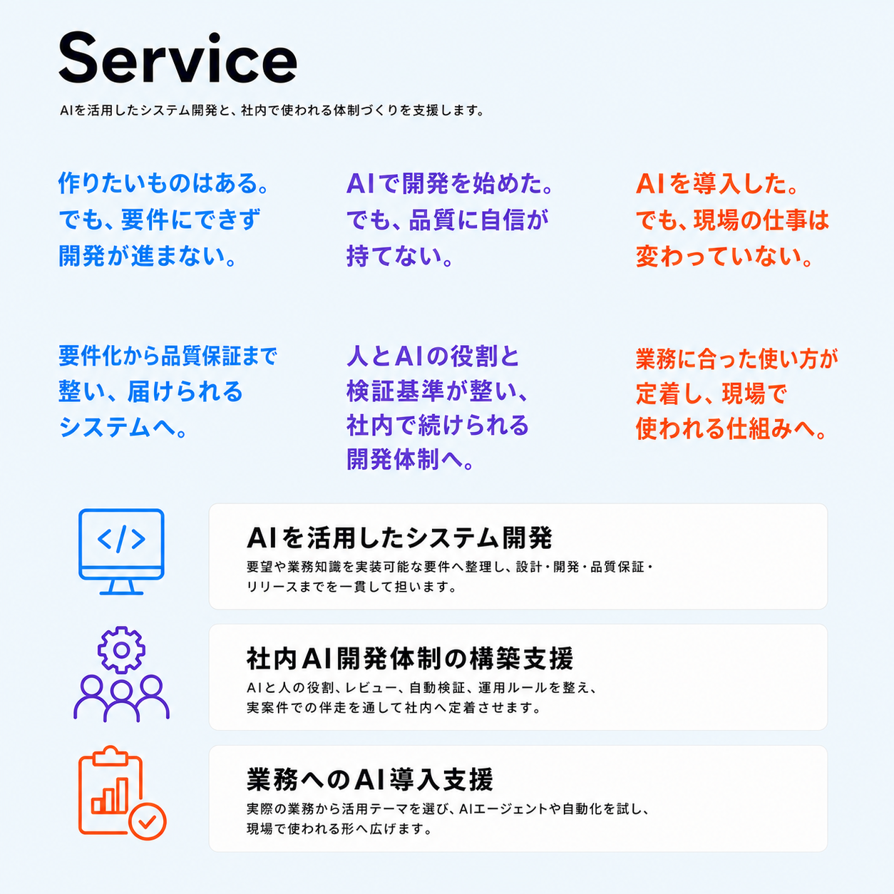
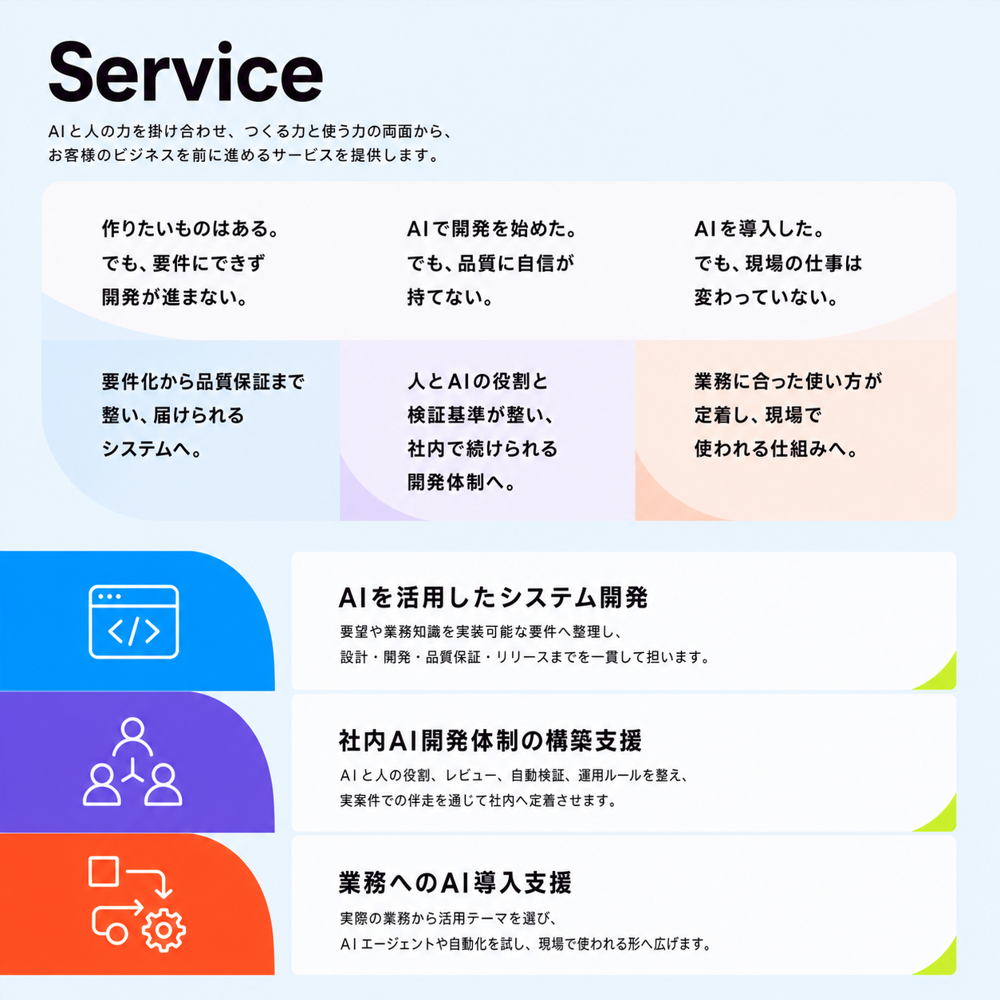

A / Structured editorial field
厳密な3列グリッドと上下の面差で、悩みと解決状態の対応を最も明快に示す端正な案。

B / Open typographic bands
細かな箱を減らし、大胆な文字と余白で上下の意味を分ける編集的で軽やかな案。

C / Layered color fields
低濃度の色面と切り取りを使い、構造を保ちながらブランドらしい面のリズムを強める案。
共通構造は、上に「3列×2段の全体像」、下に「カード外のアイコン＋横長説明カード」を3組縦並び。構造は変えず、面・余白・タイポグラフィだけを比較します。

厳密な3列グリッドと上下の面差で、悩みと解決状態の対応を最も明快に示す端正な案。

細かな箱を減らし、大胆な文字と余白で上下の意味を分ける編集的で軽やかな案。

低濃度の色面と切り取りを使い、構造を保ちながらブランドらしい面のリズムを強める案。